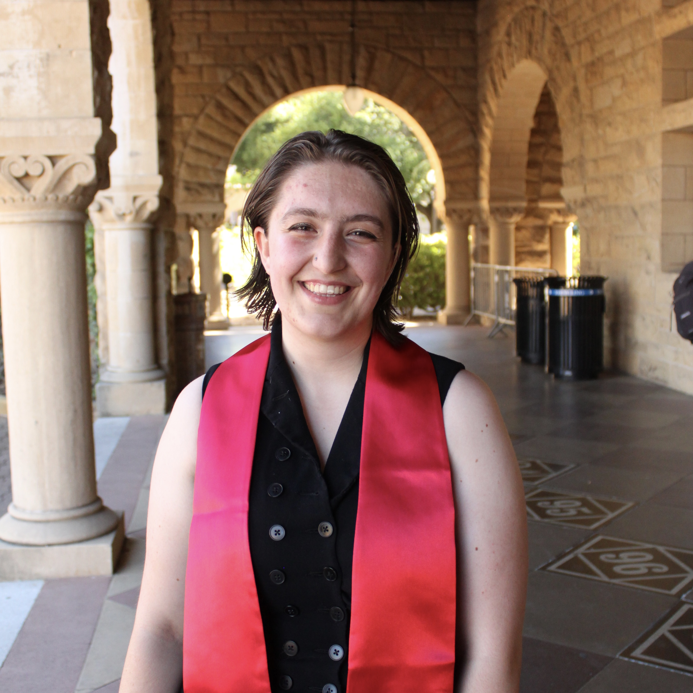

About Me

LinkedIn
Google Scholar
Hello! I am Michela Marchini, a first-year Computer Science and Engineering (CSE) PhD student at the University of Michigan studying NLP and computational social science. I am advised by David Jurgens and am a member of the Blablablab. My research thus far has been in NLP in the domains of political lamguage and discourse and in speech in the domain of code-switching and prosody.
I graduated with a BA in Computer Science and Spanish from Mount Holyoke College in 2022 and a MS in Computer Science from Stanford in 2024.